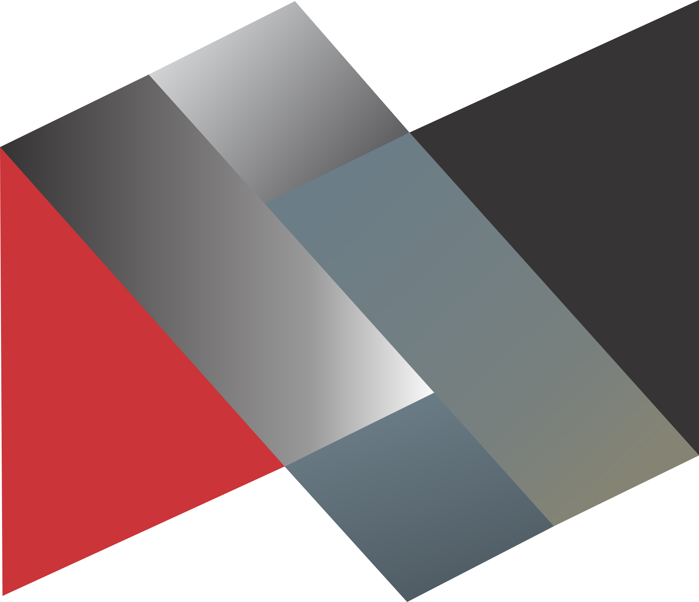

Nordeste Locações
Evolução, Insights e Ações Estratégicas
Análise comparativa 2025-2026 com inteligência estratégica para transformar dados em melhorias organizacionais
Principais Movimentações
Análise comparativa dos indicadores de clima organizacional
O que melhorou
O que piorou
Estável
Comparativo Geral 2025 vs 2026
Comparativo Detalhado por Pilar
| Pilar | 2025 | 2026 | Variação | Status | Tendência |
|---|---|---|---|---|---|
| Liderança | 87.2% | 93.3% | +6.1pp | Excelente | 📈 |
| Comunicação | 64.7% | 80.9% | +16.2pp | Bom | 📈 |
| Comprometimento Organizacional | 88.0% | 93.0% | +5.0pp | Excelente | 📈 |
| Ambiente de Trabalho | 88.8% | 91.7% | +2.8pp | Excelente | 📈 |
| Trabalho em Equipe | 77.2% | 84.1% | +6.9pp | Bom | 📈 |
| Gestão do Capital Humano | 81.8% | 84.6% | +2.8pp | Bom | 📈 |
Legenda de Tendência:
Antes (2025)
- Comunicação: 64.7% (atenção)
- Liderança: 87.2% (ótimo)
- Comprometimento: 88.0% (ótimo)
Depois (2026)
- Comunicação: 80.9% (bom)
- Liderança: 93.3% (excelente)
- Comprometimento: 93.0% (excelente)
Insights Estratégicos
Interpretação inteligente dos dados para tomada de decisão
Comunicação +16.2pp
O impacto significativo na melhoria da comunicação interna está diretamente relacionado às reuniões mensais implementadas e aos alinhamentos estratégicos iniciados em 2025.
- Canais mais definidos (67.7% vs 55% anterior)
- Comunicação da liderança (96.9%)
- Aumento da transparência organizacional
Manter e expandir as práticas atuais, adicionando mais ferramentas digitais
Liderança +6.1pp
O investimento em desenvolvimento de gestores e na clareza da comunicação transformou a liderança em um pilar de excelência organizacional.
- 99% de clareza sobre quem é o líder
- 97.9% de ética e honestidade
- 96.9% de comunicação eficaz
Criar programa de mentoria para multiplicar boas práticas
Benefícios 58.3%
A pressão inflacionária e a necessidade de revisão da política de benefícios criaram o ponto crítico principal da organização, com 64 comentários negativos. Em 2025, este tema não possuía pergunta específica — aparecia apenas como sugestão de melhoria nos comentários ("Melhoria em vale alimentação, academia, combustível"), com intensidade moderada. Com a inclusão da Q15 em 2026, descobriu-se que 58.3% estão insatisfitos com o pacote atual.
- 2025: Tema presente apenas em comentários qualitativos (sem %)
- 2026: Q15 específica sobre Benefícios — resultado: 58.3%
- 64 comentários negativos registrados
- 64 comentários negativos sobre benefícios
- Vale alimentação defasado com inflação
- Sugestões de academia, plano de saúde e auxílio combustível
Ação imediata: revisão completa do pacote considerando inflação e mercado
Tratamento Interpessoal 85.4%
Não há casos de assédio, mas 12 comentários indicam desconforto com feedbacks públicos e chamadas de atenção em ambiente aberto, gerando constrangimento.
- 8 pessoas: "Nunca presenciei humilhação"
- 3 pessoas: "Presenciei desconforto, não humilhação"
- 3 pessoas: "Chamadas de atenção em público"
Treinar líderes sobre feedback privado e comunicação respeitosa
Remuneração 59.4%
A percepção de remuneração abaixo do mercado representa risco competitivo e potencial perda de talentos para a organização.
- Comentários sobre salário vs mercado
- Risco identificado de turnover
- Impacto na retenção de talentos
Análise salarial de mercado e plano de reajuste estruturado
Análise por Unidade 2026
Visão comparativa detalhada por localização
| Unidade | Total Respostas | Média Satisfação | % Satisfação | Status | Tendência |
|---|
Legenda de Tendência:
Desempenho por Pilar
Comitê de Clima Organizacional
Governança e responsabilidade pela evolução contínua
Papel do Comitê
- Acompanhar indicadores mensalmente
- Propor ações baseadas em dados
- Validar melhorias implementadas
- Comunicar progressos organização
- Garantir governança do processo
Atuação Prioritária
Ação imediata na política de benefícios
Análise de mercado e reajustes
Treinamento sobre feedback privado
Metodologia de Trabalho
Análise de Dados
Reunião mensal para análise dos indicadores
Proposição de Ações
Desenvolvimento de planos de ação específicos
Implementação
Acompanhamento das ações propostas
Validação
Medição de impacto e ajustes necessários
A pesquisa não é o fim, é o início das melhorias.
Transformamos dados em inteligência, inteligência em ações, e ações em evolução organizacional. O compromisso da Nordeste Locações com um ambiente de trabalho melhor continua.